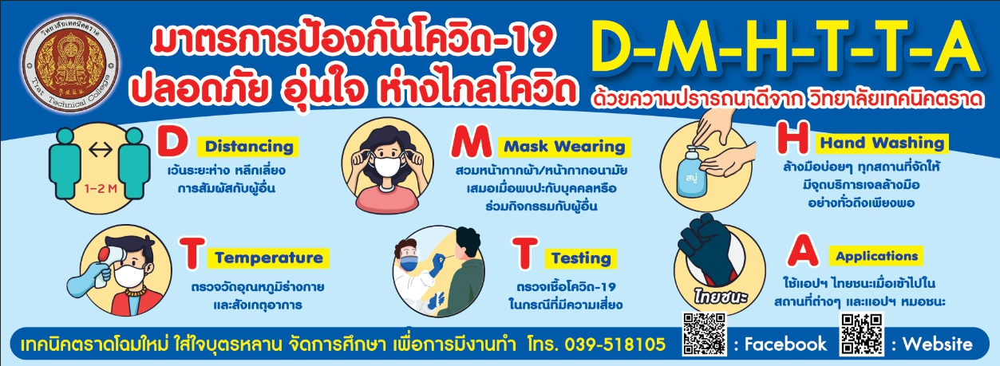

แมววิเชียรมาศ “เพชรแห่งดวงจันทร์
ลักษณะสีขน : ขนสั้นแน่นสีขาว หรือสีน้ำตาลอ่อน มีแต้มสีครั่ง หรือสีน้ำตาลไหม้ที่บริเวณใบหน้า

โคโรนา 2019
โรคติดเชื้อไวรัสโคโรนา 2019 (โควิด-19) เป็นโรคติดเชื้ออันเกิดจากไวรัสโคโรนากลุ่มอาการทางเดินทางหายใจเฉียบพลันรุนแรง 2 (SARS-CoV-2) มีระบุโรคครั้งแรกในเดือนธันวาคม 2562 ในนครอู่ฮั่น เมืองเอกของมณฑลหูเป่ย์ ประเทศจีน และได้กระจายไปทั่วโลกนับแต่นั้น ส่งผลให้เกิดการระบาดทั่วของโควิด-19